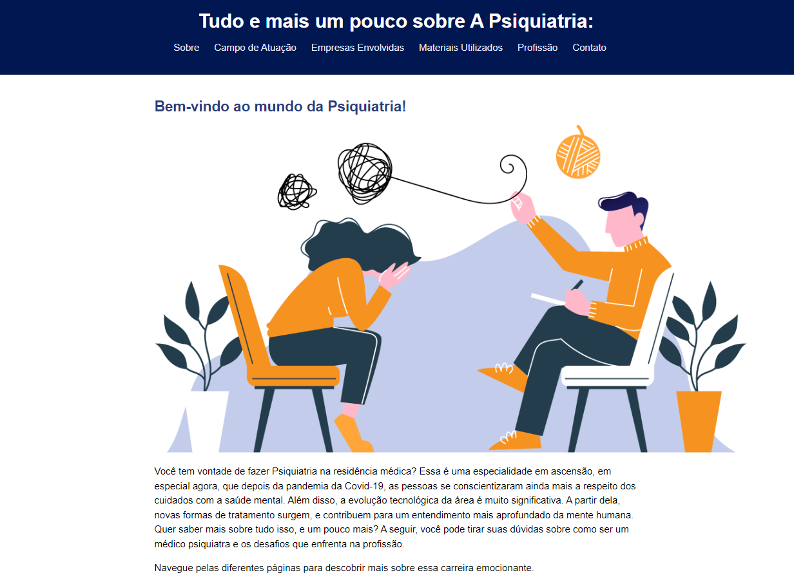
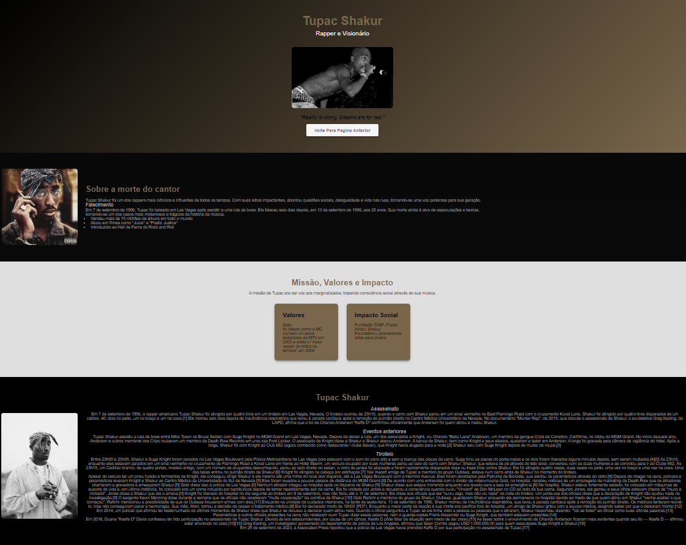

Primeiro Projeto
Esse é um site que fiz para falar sobre psiquiatria, uma área super importante e que tem ganhado ainda
mais destaque nos últimos tempos, especialmente depois da pandemia. Foi um projeto muito legal de fazer,
mas também teve algumas dificuldades no processo.
Primeiro, organizar o conteúdo foi um desafio, porque queria que tudo ficasse bem claro e fácil de
navegar, mas ao mesmo tempo interessante pra quem está acessando. Além disso, estilizar o site só com
HTML e CSS foi meio complicado, porque senti que faltou aquele toque mais dinâmico que deixaria tudo
mais moderno e interativo.
Outra coisa que deu trabalho foi pensar na responsividade, ou seja, fazer o site ficar bom tanto no
computador quanto no celular. Acho que ficou funcional, mas sei que dá pra melhorar bastante.
No geral, acho que ficou um projeto bem bacana pra quem quer saber mais sobre psiquiatria, mas sempre dá
pra lapidar e deixar ainda melhor!
Projeto Atual/Evolução
Comparar o site inicial sobre psiquiatria com o site mais recente mostra o quanto evoluiu no
desenvolvimento web em poucos meses. A diferença não é só na parte técnica, mas também na forma como
consegui aplicar mais criatividade e organização ao design e ao conteúdo.
No primeiro site, sobre psiquiatria, o foco estava em organizar informações relevantes e criar algo
funcional. Eu uso HTML e CSS básicos para montar o layout, mas sinto que a estilização ficou mais
simples e limitada. Apesar de os núcleos e a estrutura básica funcionarem, o design não tinha muitos
detalhes visuais ou de interatividade. Além disso, a responsabilidade ainda era uma questão a ser
melhorada.
Já no novo site, sobre Tupac Shakur, consegui trazer mais elementos visuais, como imagens, indicações em
destaque e até botões com estilo. O layout ficou muito mais sonoro e atrativo, com peças bem divididas e
organizadas. As cores e fontes também foram melhor trabalhadas, criando um impacto maior para o usuário.
Além disso, comecei a incluir elementos como cartões e listas bem estilizadas, o que ajudou a apresentar
as informações de maneira mais clara e interessante.
Outro ponto de evolução foi na usabilidade. O site mais recente tem navegação mais fluida e intuitiva,
com botões de chamada para ação e links diretos entre páginas.Consegui criar
algo mais dinâmico e moderno, explorando melhor os recursos do CSS.
Essa evolução mostra como a prática e o aprendizado contínuo fizeram diferença. O primeiro site foi
essencial para construir uma base e entender o que poderia ser melhorado. O segundo site reflete não
apenas o avanço técnico, mas também a confiança em aplicar ideias mais ousadas no design. Ainda há
espaço para melhorar, mas ver essa evolução em tão pouco tempo é muito motivador! .


Dificuldades Encontradas
Ao longo dessa jornada, enfrentei várias dificuldades, mas cada uma delas acabou me ajudando a aprender e a
evoluir. No começo, o desafio era entender o básico de HTML e CSS e, principalmente, como aplicar isso na
prática. Criar um layout que fosse funcional e visualmente atrativo foi algo que exigiu muita tentativa e
erro. No site sobre psiquiatria, por exemplo, tive dificuldade em organizar o conteúdo de forma clara e
deixá-lo interessante ao mesmo tempo.
Outra questão foi a estilização. No início, parecia complicado criar designs mais sofisticados apenas com
CSS, então acabava optando por algo mais simples. Mesmo assim, percebi que a falta de interatividade era um
ponto fraco e algo que precisava melhorar. Além disso, a responsividade foi uma das maiores barreiras. Fazer
o site funcionar bem em diferentes tamanhos de tela não foi fácil, e às vezes o layout parecia desorganizado
em dispositivos móveis.
Agora que estou trabalhando com PHP e bancos de dados, surgiram novos desafios. Entender como integrar o
back-end ao front-end e como estruturar e manipular os dados no banco foi algo completamente novo pra mim.
Além disso, criar um sistema dinâmico que funcione sem erros exige bastante atenção e paciência,
especialmente quando se trata de resolver problemas que não são tão visíveis à primeira vista.
Apesar dessas dificuldades, cada obstáculo foi uma oportunidade de aprender algo novo. Eu tive que
pesquisar, testar e, muitas vezes, recomeçar do zero, mas tudo isso me trouxe mais experiência e confiança.
Percebo que, embora os desafios sejam inevitáveis, eles fazem parte do processo de crescimento e me ajudam a
ficar cada vez melhor no que faço.